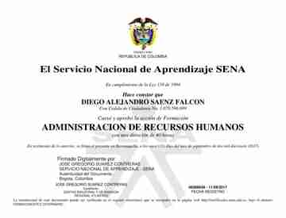
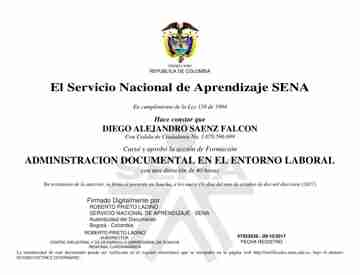

Soporte TI & Sistemas
Instalación, configuración, mantenimiento y diagnóstico.
Help DeskHardwareWindowsLinux
Diego Alejandro Saenz Falcon — perfil técnico multidisciplinario orientado a sistemas, infraestructura TI, soporte, redes, servidores, automatización y desarrollo web, con experiencia práctica en entornos operativos y empresariales.
Un perfil técnico que combina formación en Ingeniería de Sistemas con experiencia práctica y trayectoria en organizaciones de diferentes sectores.
Soy Diego Alejandro Saenz Falcon, profesional técnico multidisciplinario ubicado en Bogotá, Colombia.
Mi experiencia integra soporte TI, sistemas, redes, hardware, software, desarrollo web, automatización, operaciones, logística, ventas y gestión comercial.
En tecnología cuento con experiencia práctica en instalación, configuración, mantenimiento y diagnóstico, además de conocimientos en GNU/Linux, Windows, Ethernet, TCP/IP, modelo OSI, Cisco y servidores LAMP.
También desarrollo soluciones con HTML5, CSS3, JavaScript y PHP, y trabajo con Python, PowerShell, automatización e inteligencia artificial para resolver tareas y procesos.
Mi enfoque parte del problema: diagnosticar, documentar, solucionar, automatizar y mejorar.
Áreas de conocimiento y experiencia práctica desarrolladas a lo largo de la trayectoria profesional.
Instalación, configuración, mantenimiento y diagnóstico.
Fundamentos de redes, arquitectura y troubleshooting.
Entornos GNU/Linux y servicios web.
Soluciones web responsive y funcionales.
Procesos, datos y automatización aplicada.
Buenas prácticas de protección, administración y hardening.
Mercadeo, ventas y ejecución comercial.
Inventarios, almacenamiento y despacho.
Operación, atención, soporte y control.
Experiencia desarrollada en organizaciones comerciales, logísticas, operativas y de servicio.
Gestión de rutas comerciales y distribución, atención al cliente, cumplimiento de procesos, manejo de mercancía y responsabilidad operativa.
3 años consecutivos con medalla de cero incidentes vialesGestión comercial y atención de clientes dentro de procesos de comercialización inmobiliaria.
Ejecución de procesos de surtido, orden, disponibilidad y presentación de productos.
Reconocimiento a la excelencia · Universidad Corporativa EficaciaOperación de lácteos, derivados lácteos, carnes frías, helados y congelados; surtido, inventario, atención y ejecución comercial.
Apoyo operativo en áreas de producto de gran consumo.
Apoyo operativo durante temporada comercial.
Operación logística para la Cumbre Fénix de Casa Editorial El Tiempo.
Asesoría comercial, atención al cliente y cumplimiento de objetivos.
Verificación de precios y análisis de estrategias de marketing de competidores.
Apoyo logístico para la apertura de tienda en Girardot.
Participación en la Encuesta Multipropósito 2014.
Diseño y edición con Adobe, PageMaker e Illustrator, además de actividades comerciales.
Operación logística, conducción y ventas T.A.T. en ruta viajera.
Formación académica y complementaria alineada con el perfil técnico y profesional.
Corporación Unificada Nacional de Educación Superior — CUN
Inicio: enero de 2025
En cursoFormación complementaria aprobada; expedición de certificación oficial pendiente.
Certificación pendienteFormación complementaria aprobada en gestión de comunidades y comunicación digital.
Certificación pendienteFormación complementaria aprobada en comunicación y desarrollo de marcas.
Certificación pendienteFundamentos de redes, TCP/IP, OSI, conectividad y troubleshooting.
Completado · agosto 2026Fundamentos de soporte técnico, hardware, software y resolución de problemas.
Completado · agosto 2026Acceso directo a las credenciales de Google y Coursera.
Fundamentos de redes informáticas: TCP/IP, OSI, routing, troubleshooting, conectividad y seguridad.
 Documento original
Documento originalFormación especializada dentro del ecosistema de Google IT Support.
Fundamentos de soporte técnico, hardware, software, documentación, sistemas y redes.
 Documento original
Documento originalCertificación de Google enfocada en fundamentos de TI y soporte técnico.
Certificados SENA conservados como evidencia documental, con sus códigos de verificación oficiales.
SENA · 50 horas · 30 ago. 2017

SENA · 40 horas · 11 sep. 2017

SENA · 40 horas · 09 oct. 2017
Quien desee respaldar este proceso puede realizar el pago directamente en la pasarela institucional correspondiente. El portafolio no recibe ni administra recursos. Como reconocimiento, se podrá registrar una mención de honor permanente para quien cubra voluntariamente una certificación y desee ser reconocido.
Repositorios que muestran aprendizaje aplicado, documentación, investigación y construcción de soluciones.
Plataforma orientada a automatización, atención y aplicación práctica de inteligencia artificial.
Procesamiento de información, conversión PDF → Excel y automatización de tareas repetitivas.
Documentación técnica y conocimiento estructurado sobre TI.
Guía didáctica de aprendizaje y administración de Red Hat Enterprise Linux.
Instalación, configuración, optimización y resolución de problemas en Windows.
Proyecto de investigación y análisis aplicado al estudio cuantitativo del trading.
Investigación y documentación sobre seguridad, directivas y hardening aplicado a IA.
Mercadeo, ventas, análisis competitivo, verificación de precios, ejecución comercial y planimetría.
Recibo, cargue, transporte, almacenamiento, descargue, despacho e inventario de mercancías.
EPP, order pickers, montacargas eléctricos y de combustión, pockets, radios, CCTV y DVR.
Flujo de datos, sistemas informáticos, redes, servidores, bases de datos y soluciones web.
Disponible para oportunidades relacionadas con soporte TI, sistemas, redes, infraestructura, desarrollo web, automatización, operaciones y proyectos digitales.